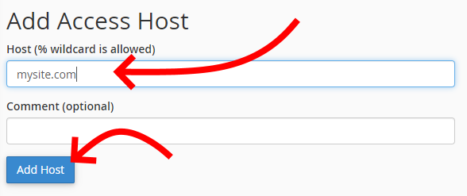

It should be as simple as:
But it's not like that. You will get an error like this:
For security reasons, the destination site must give the origin site permission to connect to its databases.
To do this, in the destination site the administrator must add a remote host to the SQL access as shown in the following images:
Important: You cannot add localhost as a remote host, because for the destination site, localhost is itself!
If you've downloaded phpmiami to use it from your machine as localhost, I'm afraid you can't access a remote site (at least that I know of).
If you want to manage your server's database withphpmiami there are two options: